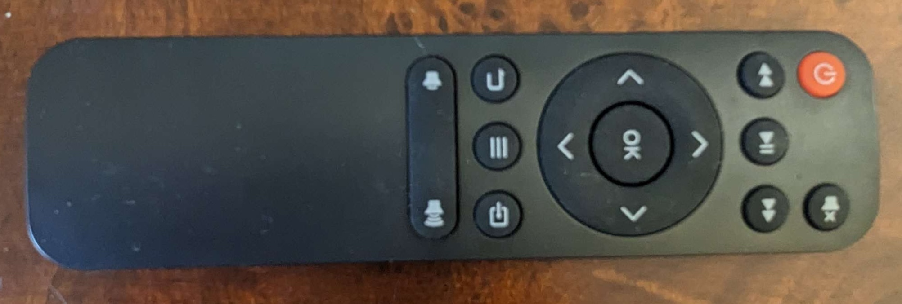
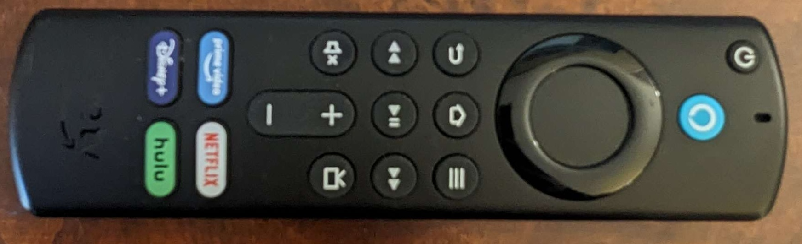
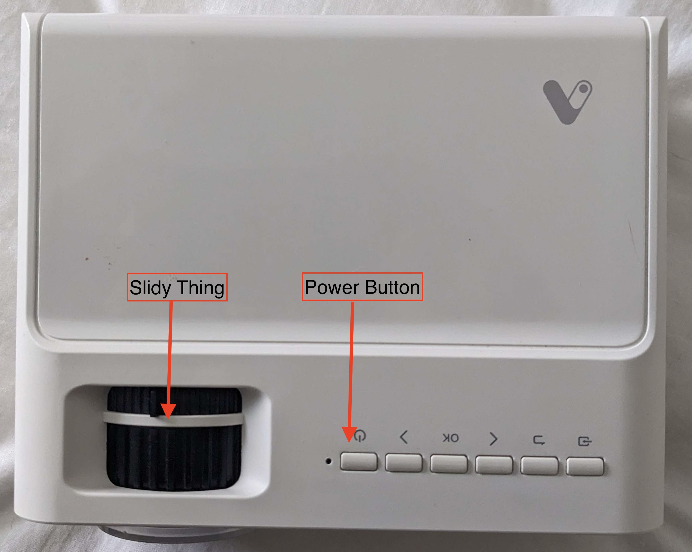

Thank you for taking care of Cora! Here's everything you need to know about staying in my room. Cora-specific information is here. Call or text anytime if you have questions or need anything! 949-370-1987
Bedroom
The "wake-word" for my Alexa Echo Dot is "echo." Use this to control the lights, small fan, and to just generally ask it things like the weather etc.
Lights and Small Fan:- Use the follwing phrases to control the lights and small fan. I will also write them on the white board by the door to my bedroom.
- "Echo, turn on/off the light by the chair."
- "Echo, turn on/off the light by the closet."
- "Echo, turn on/off the light by the mirror."
- "Echo, turn on/off the fan."
- You can also change the color of the lights. (ex. "Echo, make the light by the chair red.", "Echo, make the light by the chair white.")
- If you would prefer to use the light switch, just turn on the lights by the closet and mirror using the wake-word and then leave them on and just control it with the switch.
- If you have any problems with the lights and are unable to turn them on, let me know and I will turn them on using my phone and you can then use the switch.
Chair: This chair is a recliner, but you need to drag the chair forward a bit before reclining it, as it is currently pushed as far back into the corner as it will go without hitting the bike stand.
Watching TV / Using the Projector- I have a projector with an Amazon Fire TV Stick for watching shows and movies in my room. I left it set up in the closet; feel free to move it wherever you want.
- I usually have it in one of two places:
- If watching from bed: I take down the top picture frame on the wall above the litter box and point it there.
- If watching from the chair: I have a white curtain to pull in front of the closet door, and I set up the projector on the opposite side of the bed.
- The remote controls are on the bedside table.
- The remote with the red power button  controls the projector power and volume, but needs to be pointed at the projector from a certain angles so might take a few tries. There is also a power button on the top of the projector that I usually use when turning it on.
- The other remote  controls the Fire TV Stick apps. You will need to press any button on this remote once the projector is on to see the home screen. This remote can be used at any angle (it isn’t sensitive like the other remote).
- There is a lens cap on the projector that you will need to remove, and the picture will need to be focused using the slidy thing above the lens. 
- If you feel like the bedroom floor needs to be cleaned, the vacuum is in the closet in the office (on the right) and the broom is in the kitchen near the trash cans.
- Extra sheets are in the closet (labeled box in lower left).
- There is a weighted blanket in the closet (upper left corner) and throw blankets are hanging on the leaning shelf at the foot of the bed or folded on the bed.
Bathroom
- I have a hair catcher in the shower drain. I cleaned it out before leaving, but it usually needs to be emptied after a couple showers or it’ll keep the water from draining.
- Medication is on the shelf above the toilet if you need anything.
- Extra toilet paper is next to the toilet.